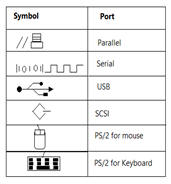
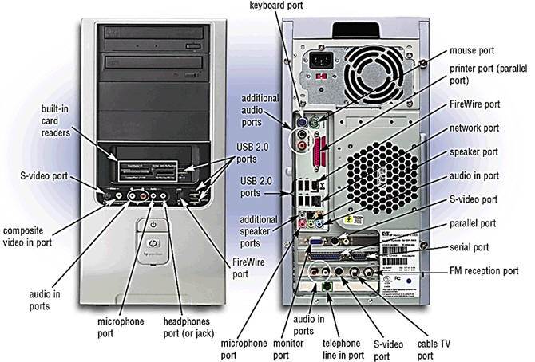

SubTopic 3: Storage Devices
Qn46. Define a port
A port is the point at which a peripheral attaches to the system unit
Qn47. Mention the ports represented by the symbols

Qn48. Mention any five ports on a computer’s system unit

Qn49. Define a connector
The part of a cable that plugs into a port or interface to connect one device to another.
Qn50. Differentiate between a storage medium and a storage device
A storage medium (media is the plural), also called secondary storage, is the physical material on which a computer keeps data, instructions, and information WHILE A storage device is the computer hardware that records and/or retrieves items to and from storage media.
Qn51. List any five examples of storage devices
• Hard disks,
• Solid state drives,
• Memory cards,
• USB flash drives,
• Express card modules,
• Optical discs,
• Smart cards,
• Magnetic stripe cards, and microfilm
Qn52. Differentiate between writing and reading as applied in storage
Writing is the process of transferring data, instructions, and information from memory to a storage medium WHILE Reading is the process of transferring these items from a storage medium into memory
Qn53. Differentiate between primary and secondary storage
Primary Memory refers to internal memory directly accessible to the CPU WHILE Secondary Storage is used by Computer systems to store larger amounts of data, and information more permanently than allowed with primary memory